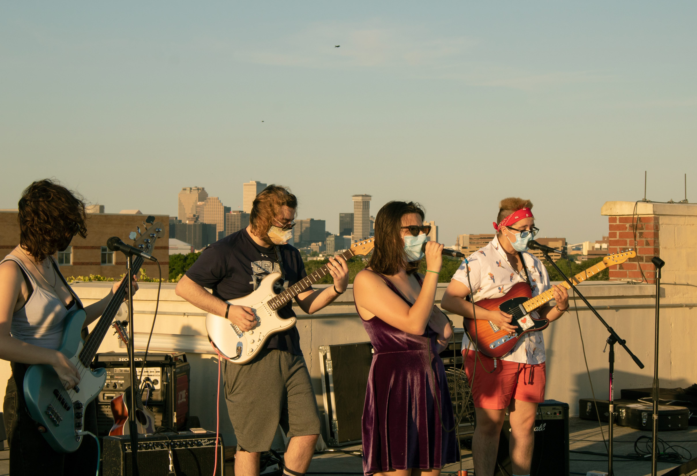
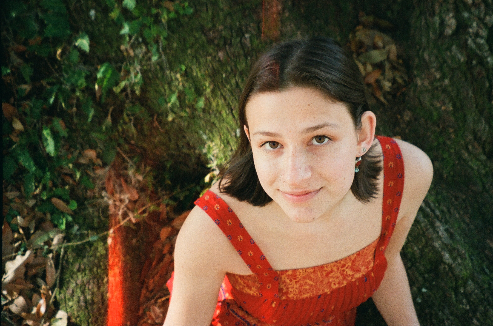
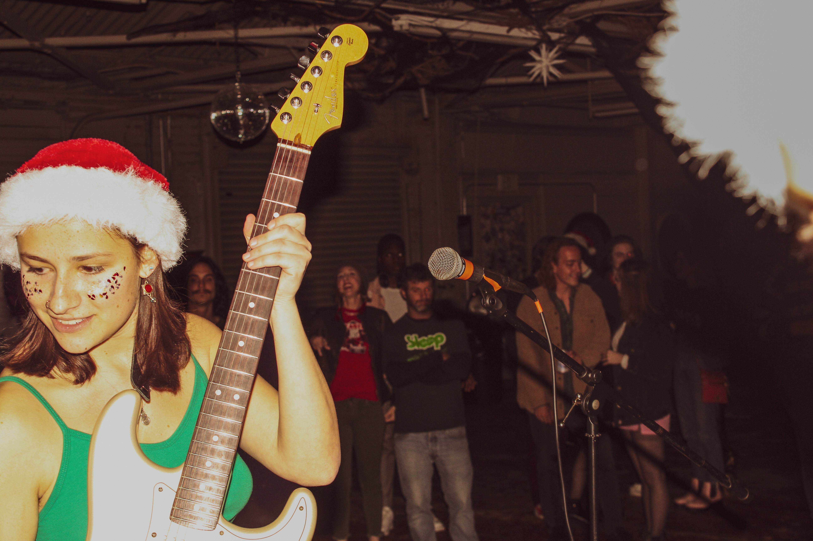
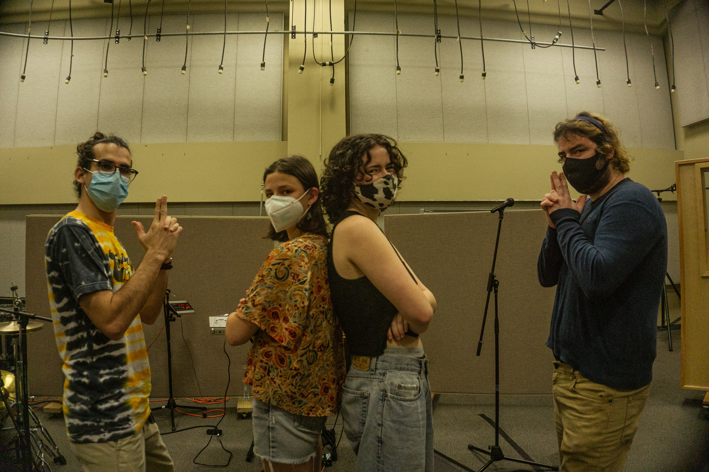

Latest Content
Watch the lyric video for Still Unwell!
Coming Up This Month...
$10
Who TF is Lyla?





Lyla DiPaul is an American recording artist based out of New Orleans, LA, where she studies music at Loyola University. DiPaul grew up in Takoma Park, MD where she fell in love with playing guitar and writing songs at the age of 10. She draws musical inspiration from a variety of songwriters including Taylor Swift, Joni Mitchell, and Phoebe Bridgers. DiPaul eloquently relays the feeling of love and heartbreak through her music, and hopes to connect to people through her work.
Contact:
For business inquiries/booking, contact emmajmanagement@gmail.com!